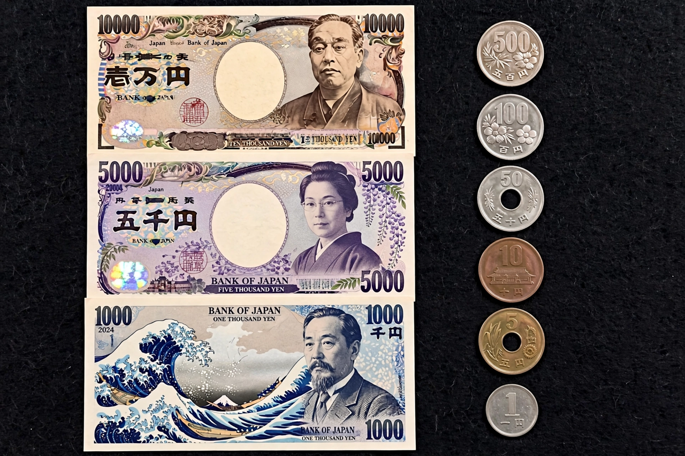

From Wikipedia, the free encyclopedia
| Code | JPY |
|---|---|
| Symbol | ¥ (円) |
| Central bank | Bank of Japan |
| Introduced | 1871 (New Currency Act) |
| Banknotes | ¥1,000, ¥2,000, ¥5,000, ¥10,000 |
| Coins | ¥1, ¥5, ¥10, ¥50, ¥100, ¥500 |
The Japanese yen (Japanese: 円, symbol: ¥; code: JPY) is the official currency of Japan. It is the third-most traded currency in the foreign exchange market, after the United States dollar and the euro, and is widely used as an international reserve currency. The yen was introduced by the Meiji government in 1871 under the New Currency Act, modelled on European decimal currencies and replacing the complex monetary system of the Tokugawa period.
The yen has no minor unit in practical use: the sen (1/100 yen) and rin ceased circulating after 1953, and prices are quoted in whole yen, giving the currency unusually small unit values among major currencies — one reason the ¥10,000 note is routine in daily commerce and Japan remains comparatively cash-oriented, with distinctive coins such as the ¥5 (with a hole) and ¥50 (also holed).

Under the Bretton Woods system the yen was fixed at ¥360 per US dollar from 1949. After the move to floating rates in 1973, the yen appreciated substantially over the following decades; the 1985 Plaza Accord accelerated this, and by 1995 the yen briefly traded below ¥80 per dollar. Periods of deflation and the Bank of Japan's zero and negative interest-rate policies made the yen a funding currency for the carry trade. Under Abenomics from 2013, large-scale monetary easing drove the yen down by roughly a third, and in 2022–2024 it weakened to multi-decade lows above ¥150 per dollar, prompting government currency intervention.
| Denomination | Portrait (2004 series) | Portrait (2024 series) |
|---|---|---|
| ¥1,000 | Hideyo Noguchi | Shibasaburo Kitasato |
| ¥5,000 | Ichiyo Higuchi | Umeko Tsuda |
| ¥10,000 | Yukichi Fukuzawa | Eiichi Shibusawa |
A new series entered circulation in July 2024, featuring three-dimensional holograms as an anti-counterfeiting measure, a world first for banknotes.
Categories: Currencies of Japan · Yen